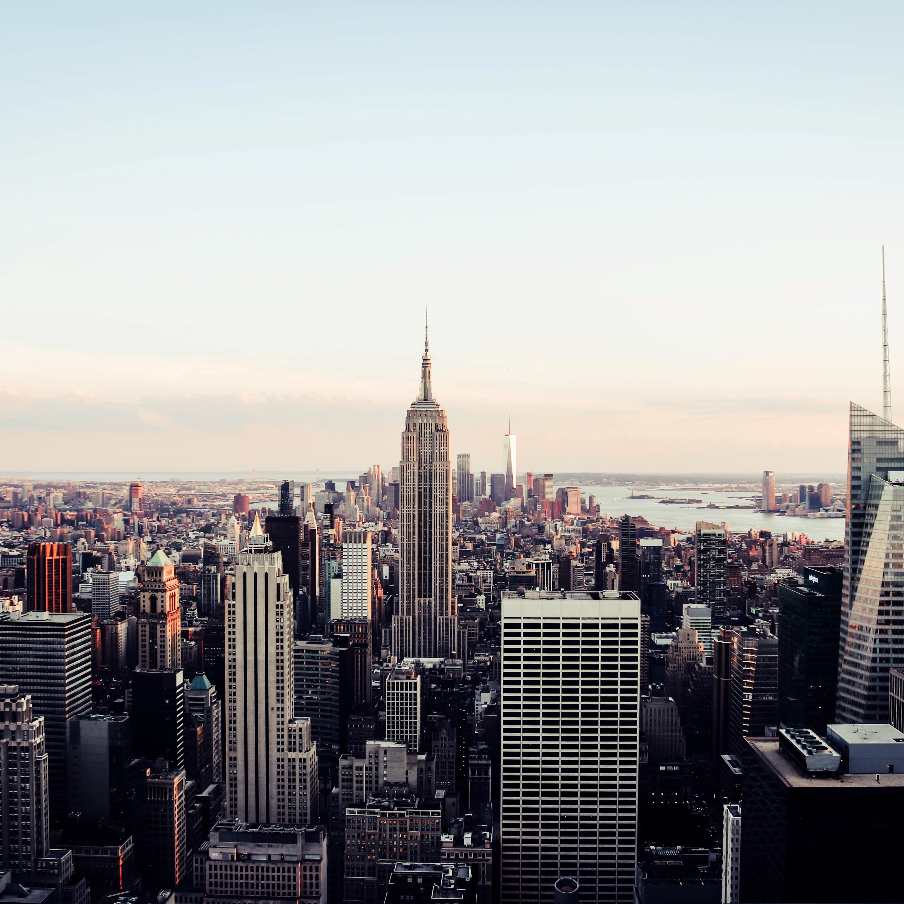
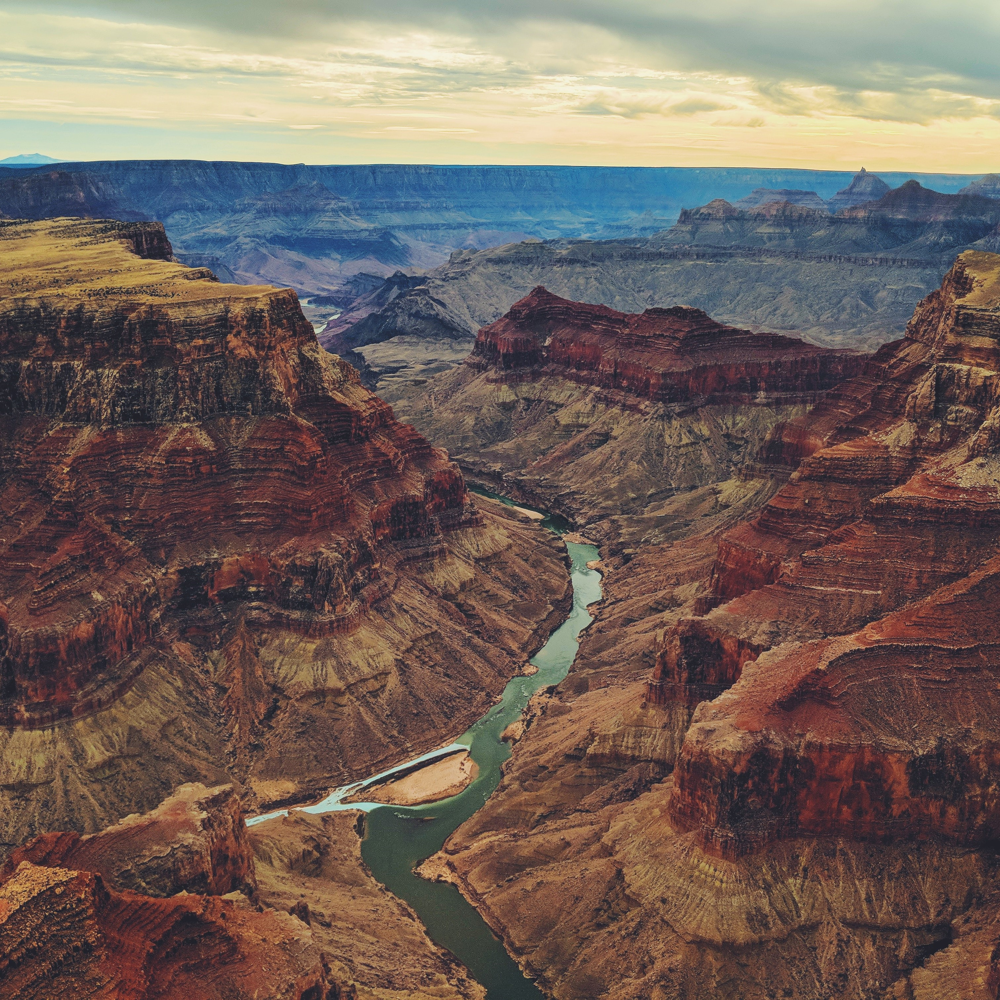
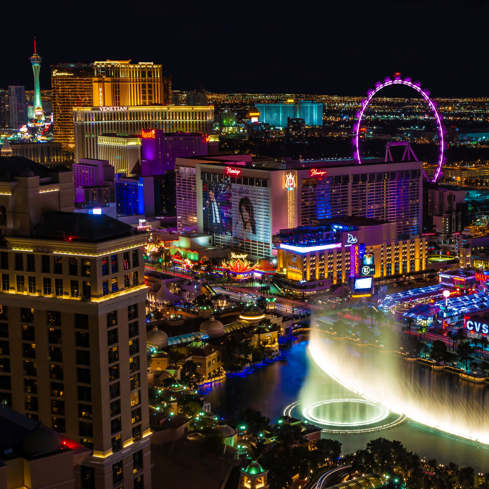
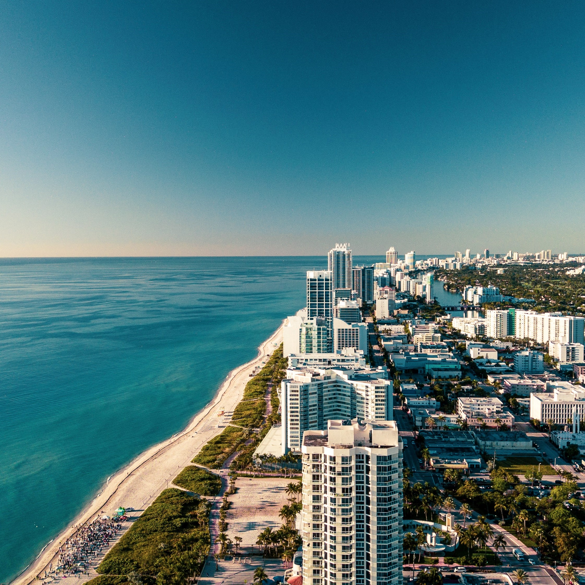
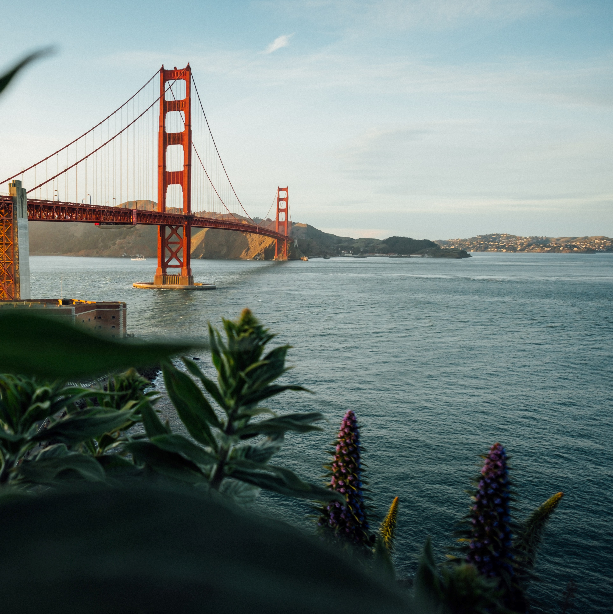
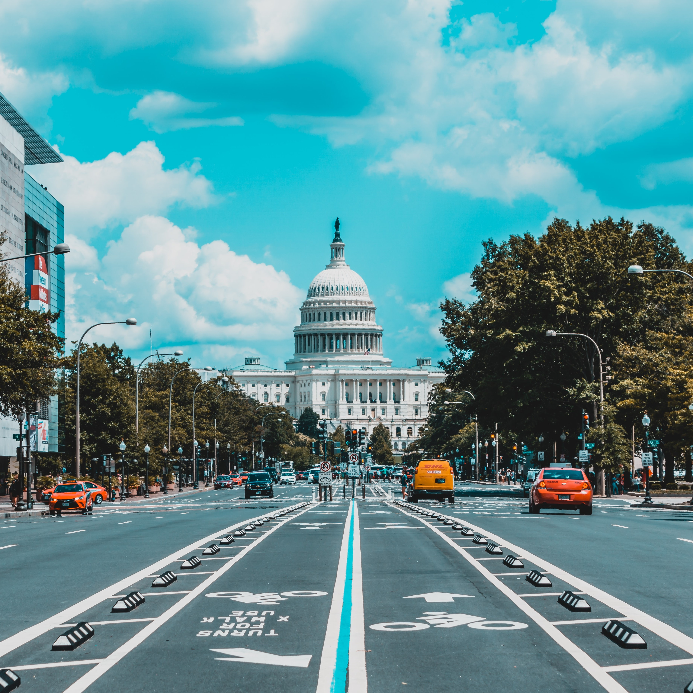

New York
New York City is like no other city in the world, and one that must be experienced to be fully appreciated. For first-time visitors, walking the streets can be like walking through a movie set, with famous sites at every turn, from the Empire State Building, to Rockefeller Plaza, the Chrysler Building, Central Park, The High Line, Times Square, 5th Avenue, Broadway, and of course, the Statue of Liberty. Sightsee by day, take in a Broadway show in the evening, work in time for shopping or a stroll, and relax and reminisce over a fantastic meal. This is New York. With too much to see and do in a day or a weekend, this is a city worth visiting time and time again.
Grand Canyon
The Grand Canyon is one of those must-see, bucket-list destinations that have been attracting visitors for generations. Gazing out over the canyon walls to an endless horizon and an unfathomable depth below is one of the highlights of any trip in the United States. The south rim of the Grand Canyon, which is the most popular and most visited section, is open all year, and visitors are welcomed at any time of year. To avoid the crush of summer visitors, consider arriving in the spring or fall; the weather is good and the crowds smaller. The road to the north rim of the Grand Canyon is closed in winter due to snow.
Las Vegas
This glittering city of lights in the desert holds a unique appeal, and one that has been attracting visitors for decades. Huge resort complexes, with all kinds of things to see and do at any time of year, have made this a destination that draws everyone, from want-to-be newlyweds who come here to say their vows, to families or singles who just want to hang out around a pool. Entertainment options are extensive, with some of the music industry's top stars calling Las Vegas home and playing to packed audiences every night. Cirque du Soleil offers another unique experience, and of course, each resort has something to entertain guests, from dancing fountains to an erupting volcano.
Miami
The hot spot of southern Florida, Miami is more than just a great beaching destination. Wonderful beaches can be found all over Florida, but Miami offers an atmosphere like no other city in the state. The Cuban vibe along Calle Ocho in Little Havana, the Art Deco District in Miami Beach that calls to mind the 1930s era, the endless parade of sports cars cruising along Ocean Drive in the evenings, and the summertime beach scene of South Beach, are just some of the unique aspects that make Miami one of the best cities in the US.
San Francisco
This charming and picturesque West Coast city is the perfect getaway destination for couples, singles, or families. Famous sites, charming streets, beautiful views, and outdoor dining are all part of what makes San Francisco such a great place to visit. Take a cruise on San Francisco Bay, tour Alcatraz, drive over the Golden Gate Bridge, wander around Fisherman's Wharf, or hop on a street car to explore the city sites. Summer or fall is a wonderful time to visit, but the climate here is mild and any time of year is pleasant.
Washington
Washington, D.C. is the US capitol and home to some of the most famous sites and national treasures in America, from the White House and the Capitol Building to the Smithsonian museums. This city should be on everyone's itinerary of the East Coast. In the spring, the Cherry Blossom Festival is a beautiful time to visit, when the trees are in full bloom. Summer can be hot. You may want to hit one of the beaches near Washington for a bit of a cool off. Fall is also a good time, when the hot summer temperatures have cooled off enough to make walking around outside very comfortable and the rush of the busy summer season has passed. In winter, the crowds are definitely smaller, and the city is stunning after a fresh snowfall.